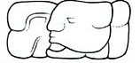

| A1 | Distance Number: 5 K'ins, 7 Winals (should be 3 Winals) | |
| B1 | u-ti-ya "it happened" | |
| A2 | Tzolk'in: 9 Ahaw (should be 6) | |
| B2 | Haab: 13 Mak | |
| C1 | ??? 5 tuns | |
| D1 | i u-ti "and then it happened" Tzolk'in: 6 Chikchan | |
| C2 | |
Haab: 18 [Pax?] |
| D2 |  | ??? na-wa-ha "was decorated?" |
| E1 | ??? | |
| F1 | ... | (B'alah?) |
| E2 | Chan (K'awiil?) | |
| F2 | ... | (K'uhul Mutul Ahaw "Holy Lord of Mutul") |